How to do Origami Inside- and Outside-Reverse Folds
To do an origami reverse fold, you sort of "pop" the paper on the vertex of two creases. In this tutorial, I will teach you how to do both the inside and outside reverse folds.
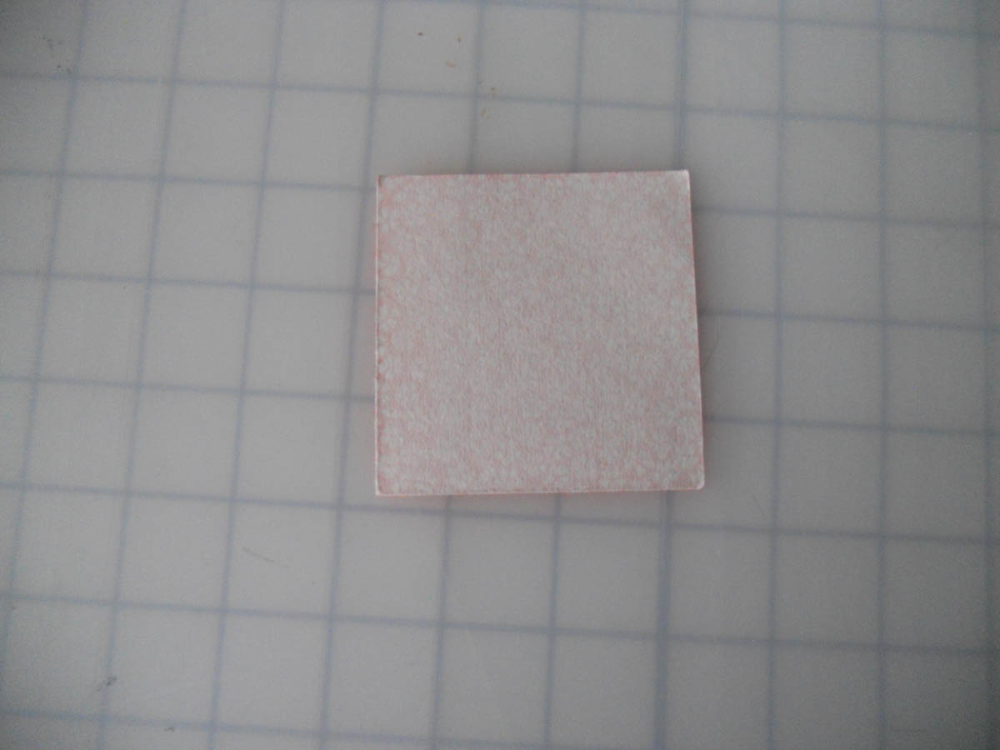
1. For this example, we will start with a
square of paper, white side up and oriented
as shown.
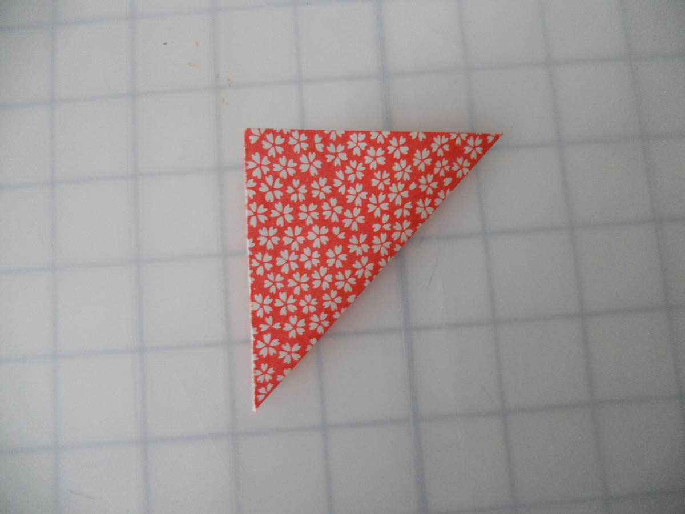
2. Valley fold the bottom-right corner up to
the top-left corner.
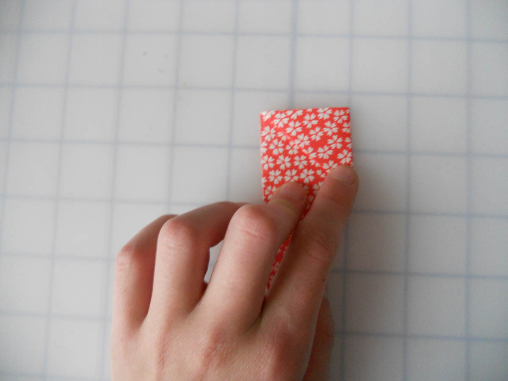
3. To precrease for the inside-reverse fold,
we will valley fold the top-right corner to the
top-left corner and unfold.
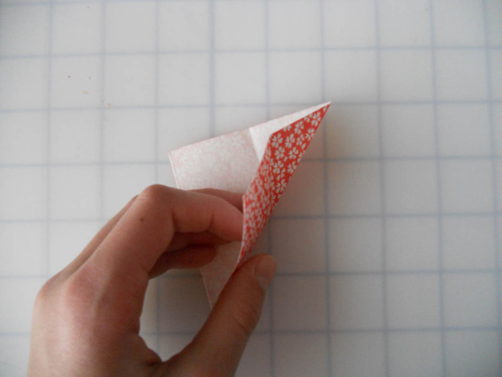
4. Open the paper up...
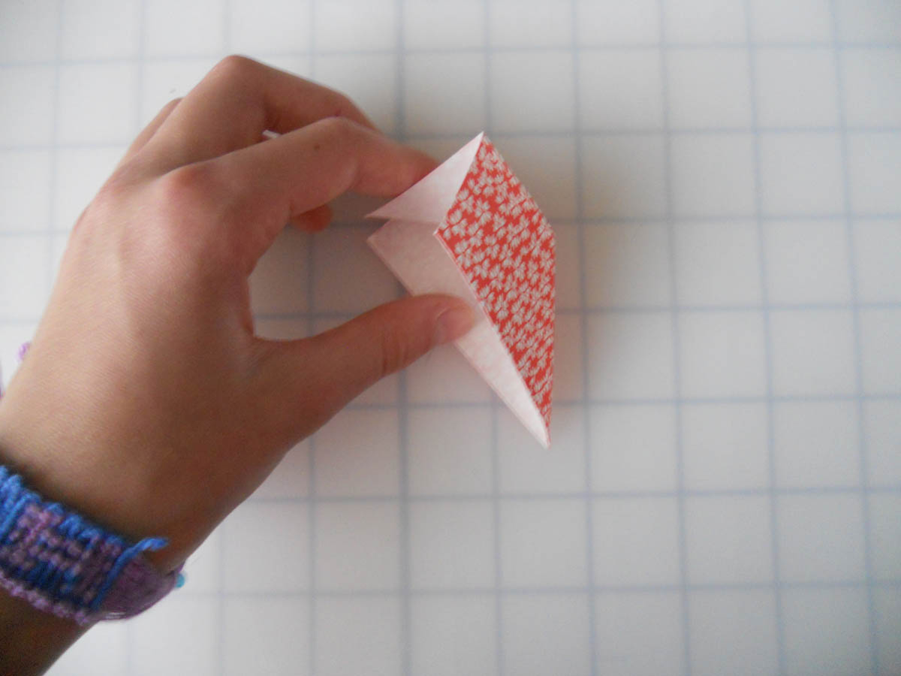
5. And make mountain folds on the two creases.
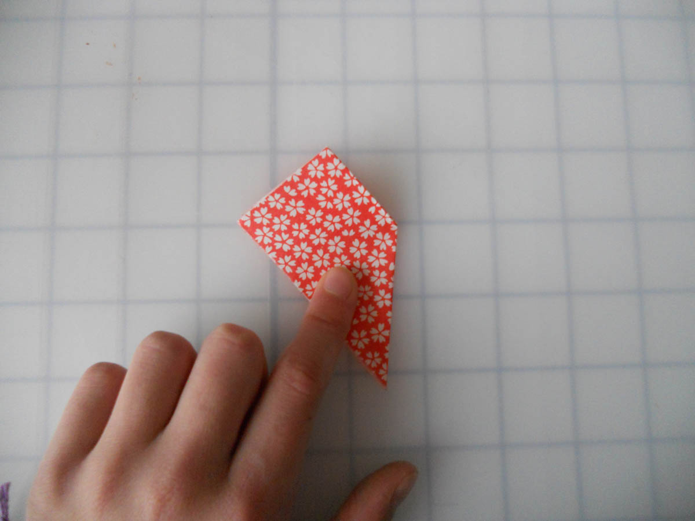
6. Flatten the paper. You have made an
inside-reverse fold.
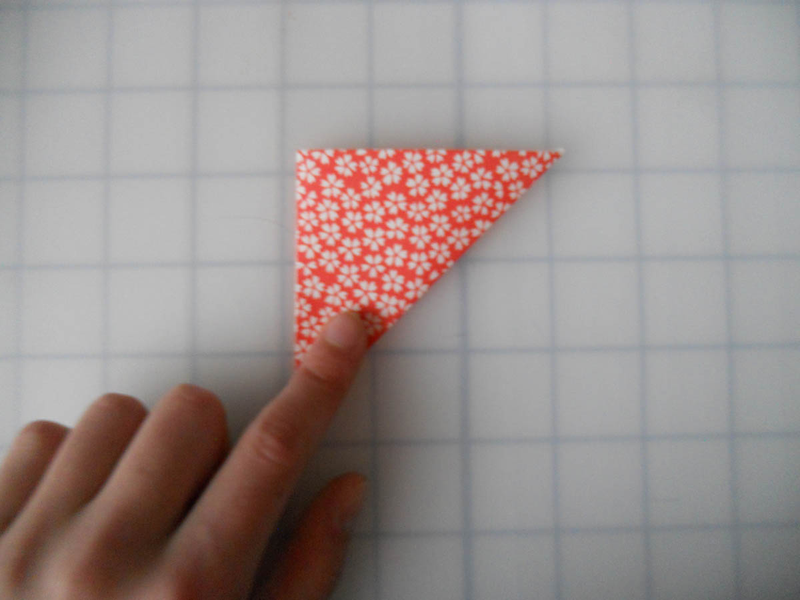
1. For the outside-reverse fold in this example,
we will start from step 2 of the inside-reverse fold.
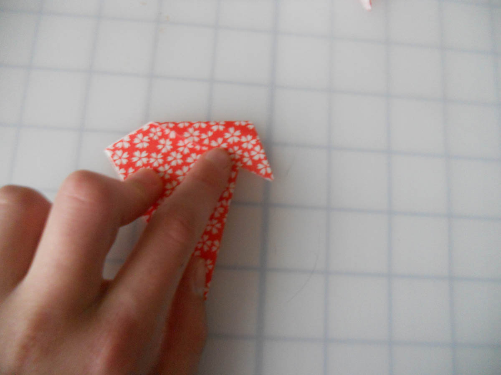
2. To precrease for the outside-reverse fold,
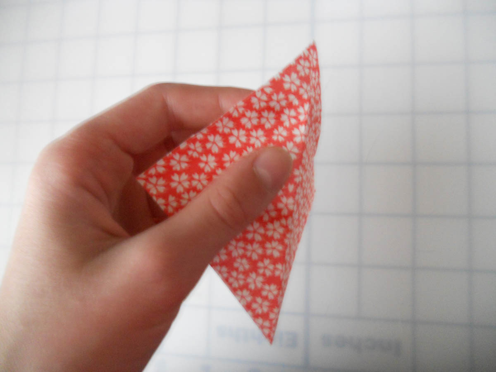
3. Partially unfold the paper...
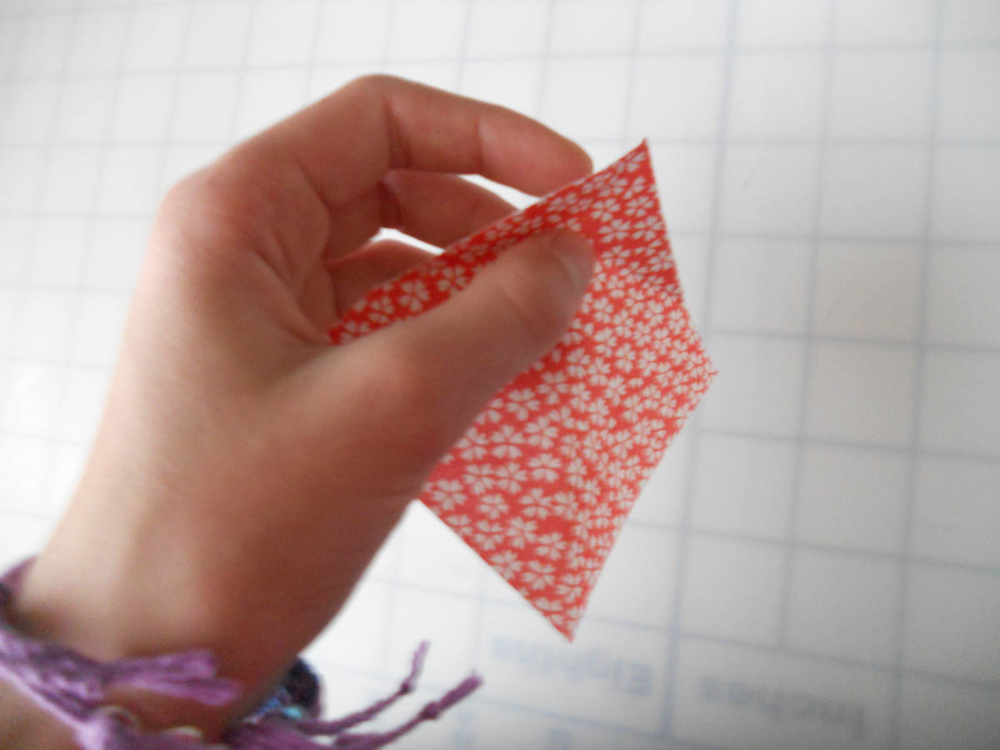
4. "Pop" the vertex of the creases with your finger...
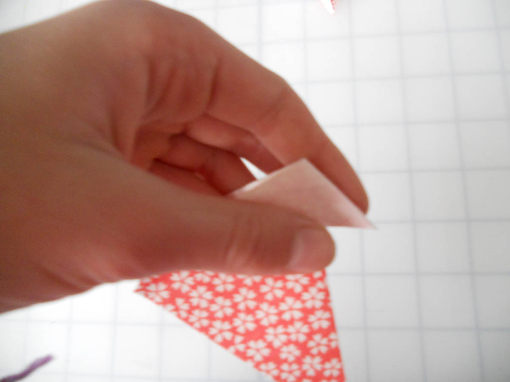
5. Make sure the two creases are mountain folds...
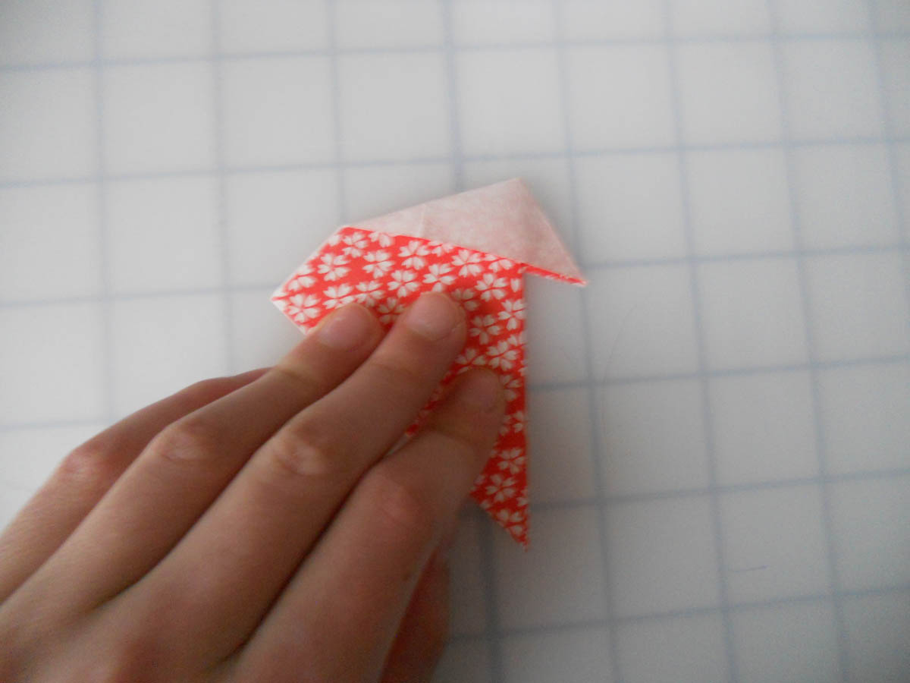
6. And flatten. You have made an outside-
reverse fold!